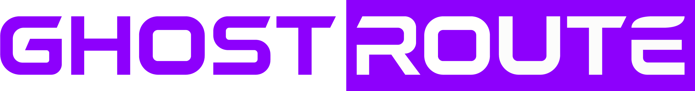

Conexão WireGuard segura para seus aplicativos.
WIREGUARD OFICIAL
Conexão privada com controle simples.
Use a VPN completa pelo WireGuard oficial ou escolha aplicativos específicos para o túnel seletivo do WireSock.
ROTEAMENTO POR APLICATIVO
Parado
Aplicativos no túnel
Escolha os aplicativos que usarão a VPS. O GhostRoute abre os selecionados com suporte a TCP e UDP; o restante do Windows permanece normal.
Carregando aplicativos…
Nenhum aplicativo selecionado.
Feche os aplicativos selecionados antes de iniciar.
Experimental: encaminha TCP e UDP somente dos aplicativos marcados. Não selecione jogos competitivos e mantenha anticheats fechados durante os testes.
IDENTIDADE DO DISPOSITIVO
Não gerada
Provisionamento individual
Gera uma chave exclusiva neste computador. A chave privada é protegida pelo Windows e nunca é copiada ou enviada.
Dispositivo—
Chave pública
—
A identidade atual de teste continuará ativa até o cadastro desta nova chave na VPS.
Configuração de desenvolvimento
O GhostRoute referencia a cópia protegida por DPAPI no cofre oficial do WireGuard; a chave nunca é exibida.
Estado real do túnel
Handshake—
Recebido—
Enviado—
IP público—
Diagnóstico de rede
DNSNão testado
DNS por interface—
IPv6 públicoNão testado
Última verificação—
Selecione a configuração WireGuard de teste.